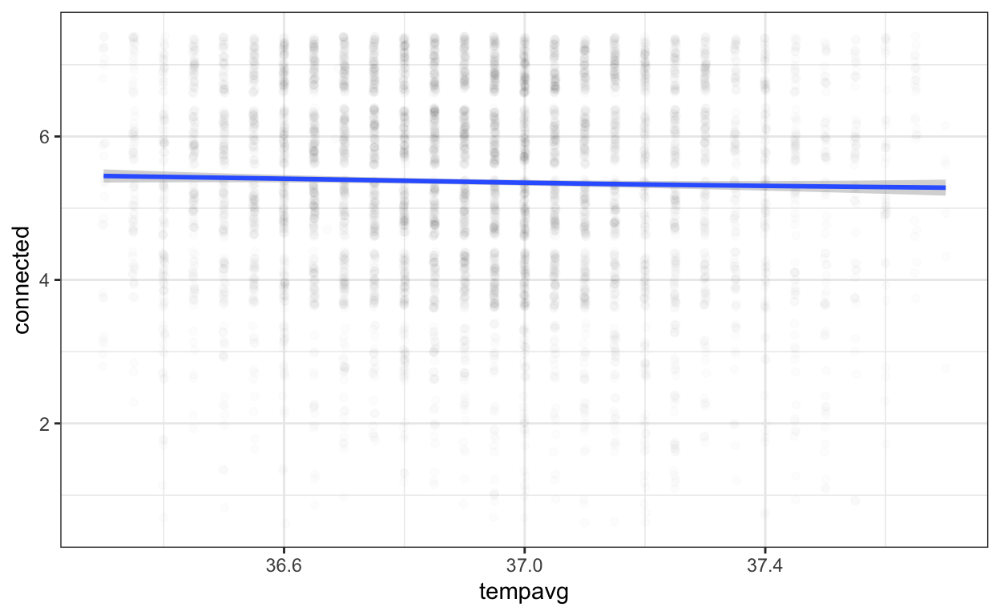

There was recently a bit of a tussle in the literature about the question whether physical warmth prime social social warmth. A nonreplication of Williams & Bargh (2008) by Chabris, Heck, Mandart, Benjamin, & Simons (2018) did not support that holding a hot coffee cup would make people judge others as warmer, among other things. Bargh & Melnikoff (2018) responded and pointed out that the larger question about the connection between social and physical warmth no longer rested on their initial small study.
Among other studies, they cited the Human Penguin Project and a study by Inagaki & Human (2019) in which daily tympanic (in the ear) temperature readings where correlated with feelings of social connectedness in an experience sampling design.
](https://live.staticflickr.com/2899/14579050789_7a1623171a_o_d.jpg)
Figure 1: Human penguins? From the Internet Archive Book Images
I decided to look the experience sampling study up, because I wanted to know how the authors had dealt with the well-known diurnal changes in body temperature and the circamensal rhythm, in which naturally cycling1 women experience increases in body temperature after ovulation.
The authors seemed to be aware of these issues (e.g., they excluded pregnant women and women who used hormonal birth control), but took a fairly strictly correlational approach to the data. The literature discussed was all about high temperatures increasing social warmth though. However, their design was used to remove between-person confounds (such as age and pregnancy), so they do seem to want to lay the groundwork for causal claims.
The authors analyses left me wishing for more though. I thought I could potentially exclude a confound of post-ovulatory change in temperatures by looking at within-day variation and that I could maybe adjust for time of day to rule out a common cause confounder of both temperature and feelings of connectedness. The authors simply wrote “there are no hypothesized effects related to time of day in the current study.”
To my great pleasure, I found the authors had uploaded a processed subset of their data to the Open Science Framework.
As far as I can tell from the also provided R source code, this is the final dataset used for analysis (I can reproduce their Table 1).
There are 6633 observations in the dataset from 212 people.
The authors had participants measure their temperature twice 3 minutes apart, but did not respond the correlation between the two measures. I graphed it.
Figure 3: Two temperature readings from the right ear 3 minutes apart.
There were three surprising things about this graph for me.
- It’s quite noisy (r=0.88)—as a psychologist myself I always kind of expect physiological measures to have better reliability (even though I know that need not be the case).
- It is bunchy. Either the thermometers reported readings only to a tenth of a degree or people only reported tenths or the authors rounded the data. This seems like a low standard for accuracy for a scientific study (for comparison, women who measure basal body temperatures for contraception usually track hundredths of a degree).
- Some people had temperatures which should have made them too comatose to enter them in a survey. The minimum value recorded for the average was 30.05, the maximum was 38.85. The authors reported only excluding “Two participants with tympanic readings that were consistently outside the normotensive range and were therefore suspected to be ill were excluded from final analyses, leaving a final sample of 211 participants.”. However, their abstract says “in the nonfebrile range”. But 38.8 °C is in the febrile range. And 30 °C is not febrile, but should be excluded as an outlier because of likely measurement error/participant being a zombie.
Exclusions
I restricted the range of the data to what Wikipedia calls normal range (36.5–37.5 °C) plus/minus 0.2 for a rough standard error in measurement for each measurement.
740 measurements were excluded. The correlation changed a little (r=0.83).
Figure 4: Restricted data. Two temperature readings from the right ear 3 minutes apart.
I also wondered about the diurnal variation. The authors did not share time of day or time since waking, but they shared the number of the within-day assessment.
Figure 5: Diurnal variation. Means + SEs.
Re-analysis results
Multilevel regression results

Linear mixed model fit by REML. t-tests use Satterthwaite's method [
lmerModLmerTest]
Formula: tempavg ~ (1 | ID) + (1 | ID:Day)
Data: temp
REML criterion at convergence: 213.6
Scaled residuals:
Min 1Q Median 3Q Max
-3.5004 -0.6159 0.0072 0.6322 3.7343
Random effects:
Groups Name Variance Std.Dev.
ID:Day (Intercept) 0.005167 0.07188
ID (Intercept) 0.030825 0.17557
Residual 0.050922 0.22566
Number of obs: 5893, groups: ID:Day, 1463; ID, 212
Fixed effects:
Estimate Std. Error df t value Pr(>|t|)
(Intercept) 36.9041 0.0126 208.2758 2928 <2e-16 ***
---
Signif. codes: 0 '***' 0.001 '**' 0.01 '*' 0.05 '.' 0.1 ' ' 1Linear mixed model fit by REML. t-tests use Satterthwaite's method [
lmerModLmerTest]
Formula: connected ~ temp_b + temp_w + (1 | ID) + (1 | ID:Day)
Data: temp
REML criterion at convergence: 17416.9
Scaled residuals:
Min 1Q Median 3Q Max
-5.3529 -0.4451 0.0970 0.5186 4.3220
Random effects:
Groups Name Variance Std.Dev.
ID:Day (Intercept) 0.1351 0.3676
ID (Intercept) 0.9166 0.9574
Residual 0.9027 0.9501
Number of obs: 5893, groups: ID:Day, 1463; ID, 212
Fixed effects:
Estimate Std. Error df t value Pr(>|t|)
(Intercept) 28.38771 13.60878 212.19305 2.086 0.0382 *
temp_b -0.62335 0.36876 212.17414 -1.690 0.0924 .
temp_w 0.24957 0.05661 5665.95669 4.409 1.06e-05 ***
---
Signif. codes: 0 '***' 0.001 '**' 0.01 '*' 0.05 '.' 0.1 ' ' 1
Correlation of Fixed Effects:
(Intr) temp_b
temp_b -1.000
temp_w 0.000 0.000Linear mixed model fit by REML. t-tests use Satterthwaite's method [
lmerModLmerTest]
Formula:
connected ~ temp_b + temp_b_day + temp_w_day + (1 | ID) + (1 |
ID:Day)
Data: temp
REML criterion at convergence: 17418.1
Scaled residuals:
Min 1Q Median 3Q Max
-5.3458 -0.4433 0.0959 0.5169 4.3173
Random effects:
Groups Name Variance Std.Dev.
ID:Day (Intercept) 0.1354 0.3679
ID (Intercept) 0.9165 0.9573
Residual 0.9025 0.9500
Number of obs: 5893, groups: ID:Day, 1463; ID, 212
Fixed effects:
Estimate Std. Error df t value Pr(>|t|)
(Intercept) 28.38532 13.60835 212.21364 2.086 0.0382 *
temp_b -0.77081 0.38954 263.68655 -1.979 0.0489 *
temp_b_day 0.14752 0.12547 1339.02065 1.176 0.2399
temp_w_day 0.27567 0.06344 4458.60405 4.346 1.42e-05 ***
---
Signif. codes: 0 '***' 0.001 '**' 0.01 '*' 0.05 '.' 0.1 ' ' 1
Correlation of Fixed Effects:
(Intr) temp_b tmp_b_
temp_b -0.947
temp_b_day 0.000 -0.322
temp_w_day 0.000 0.000 0.000Linear mixed model fit by REML. t-tests use Satterthwaite's method [
lmerModLmerTest]
Formula:
connected ~ temp_b + temp_b_day + temp_w_day + factor(WithinDayAssessment) +
(1 | ID) + (1 | ID:Day)
Data: temp
REML criterion at convergence: 17426.5
Scaled residuals:
Min 1Q Median 3Q Max
-5.4094 -0.4465 0.0991 0.5113 4.2991
Random effects:
Groups Name Variance Std.Dev.
ID:Day (Intercept) 0.1349 0.3673
ID (Intercept) 0.9168 0.9575
Residual 0.9022 0.9498
Number of obs: 5893, groups: ID:Day, 1463; ID, 212
Fixed effects:
Estimate Std. Error df t value
(Intercept) 28.21859 13.61064 212.17769 2.073
temp_b -0.76601 0.38959 263.59833 -1.966
temp_b_day 0.14594 0.12541 1340.27676 1.164
temp_w_day 0.25343 0.06430 4459.65903 3.941
factor(WithinDayAssessment)2 0.02306 0.03955 4706.24655 0.583
factor(WithinDayAssessment)3 0.06896 0.04001 4716.92339 1.724
factor(WithinDayAssessment)4 0.11034 0.04016 4718.30844 2.748
factor(WithinDayAssessment)5 0.04046 0.04084 4753.66239 0.991
factor(WithinDayAssessment)6 -0.05942 0.14702 5319.09589 -0.404
factor(WithinDayAssessment)7 0.01317 0.57594 5214.95864 0.023
factor(WithinDayAssessment)8 -0.92273 0.99542 5168.25697 -0.927
Pr(>|t|)
(Intercept) 0.03935 *
temp_b 0.05032 .
temp_b_day 0.24475
temp_w_day 8.23e-05 ***
factor(WithinDayAssessment)2 0.55988
factor(WithinDayAssessment)3 0.08483 .
factor(WithinDayAssessment)4 0.00602 **
factor(WithinDayAssessment)5 0.32183
factor(WithinDayAssessment)6 0.68609
factor(WithinDayAssessment)7 0.98175
factor(WithinDayAssessment)8 0.35399
---
Signif. codes: 0 '***' 0.001 '**' 0.01 '*' 0.05 '.' 0.1 ' ' 1
Correlation of Fixed Effects:
(Intr) temp_b tmp_b_ tmp_w_ f(WDA)2 f(WDA)3 f(WDA)4
temp_b -0.947
temp_b_day 0.000 -0.322
temp_w_day 0.001 -0.001 0.001
fctr(WtDA)2 -0.005 0.005 -0.004 -0.100
fctr(WtDA)3 -0.004 0.002 0.000 -0.140 0.521
fctr(WtDA)4 -0.006 0.005 -0.004 -0.115 0.516 0.516
fctr(WtDA)5 -0.002 -0.003 0.011 -0.030 0.499 0.497 0.494
fctr(WtDA)6 -0.002 0.005 -0.010 -0.017 0.141 0.141 0.142
fctr(WtDA)7 0.000 -0.003 0.008 -0.005 0.035 0.035 0.034
fctr(WtDA)8 0.000 -0.004 0.011 -0.013 0.021 0.022 0.019
f(WDA)5 f(WDA)6 f(WDA)7
temp_b
temp_b_day
temp_w_day
fctr(WtDA)2
fctr(WtDA)3
fctr(WtDA)4
fctr(WtDA)5
fctr(WtDA)6 0.139
fctr(WtDA)7 0.034 0.032
fctr(WtDA)8 0.020 0.019 0.056 Interestingly, the effects actually get much stronger when excluding these measurements. Their within-person change score for temperature has an effect size of .13, after these exclusions, it’s .24. I also tried centering the temperature by day (to get a within-day change measure that should be independent of ovulatory change and other daily change), and the estimate was .27. I also adjusted for within-day assessment, this did not change the within-day temperature effect much.
Still, a plot showed that the effect may still be driven by values which are more than 0.5 degrees away from the person mean. This stuff makes me worry about correlated measurement error.
Figure 6: Values that are more than .5 degrees away from the person mean, drive the association.
Replication
I tried replicating the association with another, larger dataset that I have access to with daily basal body temperature. Results descriptively went in the opposite direction for outcomes like feeling sociable or supportive (non-sig. neg. effects of within-person temperature), or withdrawn (positive effects).
Summary
Outlying values in the data should have been excluded. The article should probably be corrected. I can replicate the effects based on their own data, associations get even stronger. I cannot shake the feeling that the authors did not do a good enough job to rule out “boring” common cause confounders like time of day or physical activity. The authors stuck to presenting the data as correlations, but people only care about the data because of the implied causal path temperature -> connectedness. If it was people exercising in team sports -> connectedness and exercise -> temperature, few readers would care.
](https://upload.wikimedia.org/wikipedia/commons/a/a3/Aptenodytes_forsteri_-Snow_Hill_Island%2C_Antarctica_-adults_and_juvenile-8.jpg)
Figure 7: Penguins are simply way classier than us. From Wikipedia
{kind=link}
not using hormonal contraceptives, premenopausal, not pregnant or breastfeeding↩︎